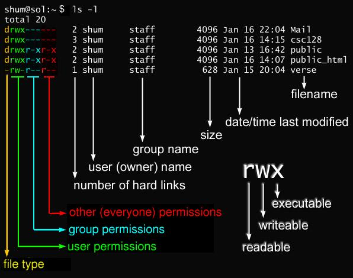

* #Matches any characters
? #Matches any single character
[characters] #Matches any character that is a member of the set
characters
[!characters] #Matches any character that is not a member of the set
characters
[[:class:]] #Matches any character that is a member of the
specified class
Commonly Used Character Classes
[:alnum:] #Matches any alphanumeric character
[:alpha:] #Matches any alphabetic character
[:digit:] #Matches any numeral
[:lower:] #Matches any lowercase letter
[:upper:] #Matches any uppercase letter
Wildcard Examples
* #All files
g* #Any file beginning with g
b*.txt #Any file beginning with b followed by any characters and ending with .txt
Data??? #Any file beginning with Data followed by exactly three characters
[abc]* #Any file beginning with either an a, a b, or a c
BACKUP.[0-9][0-9][0-9] #Any file beginning with BACKUP.
followed by exactly three numerals
[[:upper:]]* #Any file beginning with an uppercase letter
[![:digit:]]* #Any file not beginning with a numeral
*[[:lower:]123] #Any
file ending with a lowercase letter or the numerals 1, 2, or 3
example
mkdir dir1 dir2 dir3
cp options
-a, --archive #Copy the files and directories and all of
their attributes, including ownerships and permissions. Normally, copies take on the default attributes of
the user performing the copy. We’ll take a look at file permissions in Chapter 9.
-i, --interactive #Before overwriting an existing file, prompt the user for
confirmation. If this option is not specified, cp will silently (meaning there will be no warning) overwrite
files.
-r, --recursive #Recursively copy directories and their contents.
This option (or the -a option) is required when copying directories.
-u, --update #When copying files from one
directory to another, only copy files that either don’t exist or are newer than the existing corresponding
files in the destination directory. This is useful when copying large numbers of files as it skips files
that don’t need to be copied.
-v, --verbose #Display informative messages as the copy
is performed.
cp Examples
$ cp file1 file2 #Copy file1 to file2.
If file2 exists, it is overwritten with the contents of file1. If file2 does not exist, it is
created.
$ cp -i file1 file2 #Same as previous command, except
that if file2 exists, the user is prompted before it is overwritten.
$ cp file1 file2 dir1 #Copy file1 and file2 into directory dir1. The
directory dir1 must already exist.
$ cp dir1/* dir2 #Using a wildcard,
copy all the files in dir1 into dir2. The directory dir2 must already exist.
$ cp -r dir1 dir2 #Copy the contents of
directory dir1 to directory dir2. If directory dir2 does not exist, it is created and, after the copy, will
contain the same contents as directory dir1. If directory dir2 does exist, then directory dir1 (and its
contents) will be copied into dir2.
$ cp -u file1 file2 #copy only when the file1 is newer
than the file2 or when the file2 is missing
Options
-i, --interactive #Before overwriting an existing file, prompt the user
for confirmation. If this option is not specified, mv will silently overwrite files.
-u, --update #When moving files from one
directory to another, only move files that either don’t exist or are newer than the existing corresponding
files in the destination directory.
-v, --verbose #Display informative messages as the
move is performed.
examples
$ mv file1 file2 #Move file1 to file2. If file2 exists, it is overwritten with the contents of file1. If
file2 does not exist, it is created. In either case, file1 ceases to exist.
$ mv -i file1 file2 #Same as the previous command, except that if file2 exists, the user is prompted before
it is overwritten.
$ mv file1 file2 dir1 #Move
file1 and file2 into directory dir1. The directory dir1 must already exist.
$ mv dir1
dir2 #If directory dir2 does not exist, create directory dir2 and move the contents of
directory dir1 into dir2 and delete directory dir1. If directory dir2 does exist, move directory dir1 (and
its contents) into directory dir2.
options
-i, #Before deleting an existing file, prompt the user
for confirmation. If this option is not specified, rm will silently delete files.
-r, #Recursively delete directories. This means that if
a directory being deleted has subdirectories, delete them too. To delete a directory, this option must be
specified
-f, #Ignore nonexistent files and do not prompt. This
overrides the --interactive option.
-v, #Display informative messages as the deletion is
performed
Examples
$ rm file1 #Delete file1 silently.
$ rm -i file1 #file1 Same as the previous command, except that the user is prompted for confirmation
before the deletion is performed.
$ rm -r file1 dir1 #Delete file1 and
dir1 and its contents.
$ rm -rf file1 dir1 #Same as the previous
command, except that if either file1 or dir1 does not exist, rm will continue silently.
options with examples
$ ln fullFilePath hlink #creat hard link
$ ln -s fullFilePath slink #creat soft link
#hard link not allowed for directory
#A hard link cannot reference a file outside its own file system. This means a link
cannot reference a file that is not on the same disk partition as the link itself.
What Exactly Are Commands?A command can be one of four different things.
syntax
$ type command #displays the kind of command the
shell will execute
examples
$ type rama
rama is a function
rama ()
{
free | grep --color=auto Mem | awk '{print $3/$2 *
100.0}'
}
$ type cd
cd is a shell builtin
$ type cat
cat is /usr/bin/cat
syntax
$ which executable #determine the exact location of the given executable
example
$ which ls
/usr/bin/ls
$ help cd
Many executable programs support a --help option that displays a description of the command's supported syntax and options
examples
$ mkdir --help
Some programs don’t support the --help option, but try it anyway. Often it results in an error message that will reveal the same usage information.
Most executable programs intended for command line use provide a formal piece of documentation called a manual or man page. A special paging program called man is used to view them. It is used like this:
$ man program
Man Page Organization
1 #User commands
2 #Programming interfaces for kernel system calls
3 #Programming interfaces to the C library
4 #Special files such as device nodes and drivers
5 #File formats
6 #Games and amusements such as screen savers
7 #Miscellaneous
8 #System administration commands
Sometimes we need to refer to a specific section of the manual to find what we are looking for. This is particularly true if we are looking for a file format that is also the name of a command. Without specifying a section number, we will always get the first instance of a match, probably in section 1. To specify a section number, we use man like this:
#Syntax
$ man section search_term
#example
$ man 5 passwd
search the list of man pages for possible matches based on a search term
$ apropos partition #search for
pattern "partition" in all man pages
$ apropos
kill #search for pattern "kill" in all man
pages
$ man -k kill == $ apropos kill #equivalent commands
$ whatis ls
ls
(1) - list
directory contents
Info pages are hyperlinked much like web pages. Here is a sample:
$ info command
$ ./z > out.txt #Redirecting Standard Output to file out.txt
$ ./z >> out.txt #Redirecting Standard Output and append it to file
out.txt
$ ./x 2> out.txt #x excutable not exists
$ ./z > /dev/null #redirection Unwanted Output to null
file
$ ./x 2> /dev/null #redirection Unwanted Error to null file
$
cat #Standard output from Standard input
$ cat file
#display file contents
$ cat movie.mpeg.0* > movie.mpe #combine multiple files into one
file
$ cat >
file #primitive text editor
$ ls /bin /usr/bin | sort | less #sort the ls output then display it with ls
command
word count in a file
$ wc -l file #line counts(it counts from zero)
$ wc -w file #words count
$ wc -c file #bytes counts
grep [options] pattern [file]
grep -n pattern
file1 #find the line numbers where the matching patterns are found, use the -n
parameter:
grep -c pattern
file1 #count of how many lines contain the matching pattern
grep -e pattern -e pattern file1 #specify more than one matching pattern, use the -e parameter to specify each
individual pattern
grep [tf]
file1 #search for t or f
grep -Ewin 'ali|root' /etc/passwd #search for ali or root
egrep -in '^(ali|root)' /etc/passwd #search for ali or root
By default, it prints the first 10 lines of the specified files
#Syntax:
$ head [OPTION]... [FILE]...
#Examples
$ head
state.txt #display the first 10 lines
#options
$ head -n 5 file.txt #display the first 5 lines
$ head -c 25 file.txt #display the first 25 character of the file.txt
$ head file.txt sfile.txt #display the first
10 lines of each line perceeded by its file names
$ head -q file.txt sfile.txt #display the first 10 lines of
each line not perceeded by its file names
#Syntax
$ tail [OPTION]... [FILE]...
#examples
$ tail
file.txt #print by default the last 10 lines of file.txt
#Options
$ tail -n 3 file.txt #print the last 3 lines of the file.txt
$ tail -c 3 file.txt #print the last 3 characters of the file.txt
$ tail file.txt sfile.txt #display the last
10 lines of each line perceeded by its file names
$ tail -q file.txt sfile.txt #display the last 10 lines of
each line not perceeded by its file names
$ tail -f /var/log/auth.log #monitor the growth of the
log files written by many sshd program as they are running
tee command reads the standard input and writes it to both the standard output and one or more files.
example
$ echo "one day" | tee file.txt #write to standard output and file.txt
$ echo D* #list all files start with "D"
$ echo *s #list all files end with "s"
$ echo [[:upper:]]* #list all files start with capital letter
$ ll f?le.txt #list all text files if
between f and l just one character
$ ll f[io]le.txt #list file names file.txt or
fole.txt
$ echo ~
/home/ali
#syntax
$ $((expression))
#example
$ echo $((2 + 2))
$ echo {0..10}
1 2 3 4 5 6 7 8 9 10
$ echo {a..d}
a b c d
$ echo $USER
ali
$ echo $(ls)
$ ls -l $(which cp) == $ ls -l `which cp` #equivalent
all the special characters used by the shell lose their special meaning(like space) when placed between double quotes except ($,\,`,parameter expansion, arithmetic expansion,command substitution)
$ echo "$USER $((2+2)) $(cal)" parameter expansion , arithmetic expansion and command
substitution don't lose their meanings inside double quotes
effect of double quotes on command substitution
The fact that newlines are considered delimiters by the word-splitting mechanism causes an interesting, albeit subtle, effect on command substitution. Consider the following:
examples
$ echo "$(cal)" #the double quotes resulted in a command line with one argument that includes the
embedded spaces and newlines.
November 2021
Su Mo Tu We Th Fr Sa
1 2 3 4 5 6
7 8 9 10 11 12 13
14 15 16 17 18 19 20
21 22 23 24 25 26 27
28 29 30
$ echo $(cal) #the unquoted command substitution resulted in a command line containing 38
arguments
November 2021 Su Mo Tu We Th Fr Sa 1 2 3 4 5 6 7 8 9 10 11 12 13 14 15
16 17 18 19 20 21 22 23 24 25 26 27 28 29 30
If we need to suppress all expansions, we use single quotes
we use backlash character "\" to escape expansion inside the double quotes
example
$ echo "The balance for user $USER is: $5.00" #we want to quote only "$" but the parameter expansion happend
The balance for user ali is:
.00 #here we can't see "$5.00" because of parameter expansion
$ echo "The balance for user $USER is: \$5.00" #here we use the backlash "\" to escape the special character "$" to prevent parameter
expansion
we can escape $, !, &, spaces, and others by using backlash character
example
#if we have file with name $name and we want to display its contents
cat $file #here "file" is interpretated as variable because of
special character "$"
cat \$file #here we escape "$" by backlash "\" so we cn display the
file content
we will use command echo with option "e" to enable interpretation of backslash escapes
$ echo -e "one\aday" #Bell (an alert that
causes the computer to beep)
$ echo -e "one\bday" #Backspace
$ echo -e "one\nday" #Newline; on
Unix-like systems, this produces a line feed
$ echo -e "one\rday" #Carriage
return
$ echo -e "one\tday" #Tab
History Expansion
|
Sequence |
Action |
|
!! |
Repeat the last command. It is probably easier to press the up arrow and ENTER . |
|
! number |
|
|
! string |
Repeat last history list item starting with string . |
|
!? string |
Repeat last history list item containing string . |
examples
$ history #show history
$ !! #Repeat
the last command
$ ! cd #Repeat last
history list item starting with cd
$ !88 #excute the
command number 88 in the history
$ !? string #Repeat last history list item containing
string
CTRL-R #search the
history
$
id #Display user identit
$ cat /etc/passwd #display uid, gid,
account’s real name, home directory, and login shell for all users
$ cat /etc/group #display all system
groups
$ sudo cat /etc/shadow #holds information about the user’s
password
output specific information about the user(ali) and the root
$ cat /etc/passwd | egrep "(ali|root)" #display uid, gid, account’s real name, home
directory, and login shell for user(ali) and root
root:x:0:0:root:/root:/bin/bash
ali:x:1000:1000:ali:/home/ali:/bin/bash
$ cat /etc/group | egrep "(ali|root)" #display all the groups that user(ali) and root
belongs to
root:x:0:
adm:x:4:syslog,ali
cdrom:x:24:ali
sudo:x:27:ali
dip:x:30:ali
plugdev:x:46:ali
lpadmin:x:120:ali
sambashare:x:999:ali
ali:x:1000:
ubridge:x:134:ali
libvirt:x:135:ali
$ sudo cat /etc/shadow | egrep "(ali|root)" #display information about the user(ali)
and root password
root:!:18737:0:99999:7:::
ali:$6$GD1tfqJFNWYw5Jvs$YAz7UZv69Of.maDv5ofDeC00rgBxb9ayhzfKVpW4oFCwYVZNBGxPtan/FM/WvsfS2ouGKQ/sa2a/.CSf/qN4U1:18885:0:99999:7:::
output of "$ ls -l" command
File Types
Permission Attributes
Permission Attribute Examples
$ chmod (owner(0..7)-group(0..7)-world(0..7)) file.txt #set
permission for file.txt using Octal number representatio
$ chmod [u|g|o] [+|-|=] [r|w|x]
file.txt #setting permissions using symbolic method
$
umask #display default permissons for newly created files
$ umask
4022 #set default permission for newly created files
$ sudo chown hma:hma
file #change file owners to user hma and group hma
ps
-efl #Show all processes with full format listing and a long listing.
ps
-A #Show all processes
ps
-j #Show job information
ps
x #Show all processes, even those without a terminal device assigned.
ps U userlist #Show processes owned by a user ID listed in userlist.
ps -p pidlist #Show processes with a PID listed in pidlist.
ps -t ttylist #Show processes associated with a terminal listed in ttylist.
ps
T #Show all processes associated with this terminal.
ps
a #Show all processes associated with any terminal
ps
r #Show only running processes.
ps
x #Show all processes, even those without a terminal device assigned.
ps
l #Use the long format. **important
ps
c #Display the true command name (the name of the program used to start the
process).
ps
e #Display any environment variables used by the command.
ps --deselect #Show all processes except those listed in the command line.
ps --Group grplist #Show processes
whose group ID is listed in grplist.
ps --User userlist #Show processes
whose user ID is listed in userlist.
ps --group grplist #Show processes
whose effective group ID is listed in grplist.
ps --pid pidlist #Show
processes whose process ID is listed in pidlist.
ps --ppid pidlist #Show
processes whose parent process ID is listed in pidlist.
ps --sid sidlist #Show
processes whose session ID is listed in sidlist.
ps --tty ttylist #Show
processes whose terminal device ID is listed in ttylist.
ps --user userlist #Show processes
whose effective user ID is listed in userlist.
ps --format format #Display only
columns specified in the format .
ps --context #Display additional security information.
ps --cols n #Set screen width to n columns.
ps --columns n #Set screen width to n columns.
ps --cumulative #Include stopped child process information.
ps --forest #Display processes in a hierarchical listing showing parent processes.
**important
ps --headers #Repeat column headers on each page of output.
ps --no-headers #Don't display column headers.
ps --lines n #Set the screen height to n lines.
ps --rows n #Set the screen height to n rows.
ps --sort order #Define the column(s) to use for sorting the output.
ps --width n #Set the screen width to n columns.
ps
--help #Display the help information.
ps
--info #Display debugging information.
ps --version #Display the version of the ps program.
ps --forest x #see parent and child processes
$ pstree
$ pstree -p #with pid
$ xlogo #run process not in background
$ xlogo& #run process in background
[1] 7316
$ jobs #display background processes (jobs) run by the
current shell
[1]+
Running xlogo
&
$ fg %1 #return to job number 1
$ xlogo #run app
CTRL+Z #pause app
$ bg %number #resume app
$ ps
-ux #to know the process exact name
$ kill `pidof processName` #terminate the process
$ kill -KILL `pidof processName` #force the process to be
closed
$ kill -9 `pidof processName #powerfull killing of the process
$ pkill
processName #kill process by specifying its name
$ env #view global
environment variables
$ printenv #view global environment
variables
$ printenv var #display an individual environment variable's
value
$ set #display
global&local variables,user-defined variables and local functions
$ alias #print all the Aliases
alias alert='notify-send --urgency=low -i "$([ $? = 0 ] && echo terminal || echo error)" "$(history|tail -n1|sed -e '\''s/^\s*[0-9]\+\s*//;s/[;&|]\s*alert$//'\'')"'
alias auto='setsid autokey &>/dev/null'
alias autox='pkill -f "autokey"'
alias chrom='setsid firefox &>/dev/null'
alias egrep='egrep --color=auto'
alias fgrep='fgrep --color=auto'
alias fnc='setsid x11vnc -auth guess -forever -loop -noxdamage -repeat -rfbauth /home/ali/.vnc/passwd -rfbport 5900 -shared &> /dev/null'
alias grep='grep --color=auto'
alias l='ls -CF'
alias la='ls -A'
alias ll='ls -alF'
alias ls='ls --color=auto'
alias tracer='setsid packettracer &>/dev/null'
$ alias foo='cd /usr; ls; cd -' #setting alias
foo
$ type
foo #foo is aliased to `cd /usr; ls; cd -
$ unalias
foo #removing alias
$ my_variable=Hello #assigning the variable to a value using
the equal sign
$ echo $my_variable #displaying variable value
$ unset my_variable
$ nano /home/ali/.bashrc
$ nano /home/ali/.profile
$ sudo nano /etc/bash.bashrc
$ sudo nano /etc/profile
nano /home/ali/.bashrc #open .bashrc file and add the following entery PATH="$PATH:/home/ali/bin"
| Command | Explanation |
| CTRL + A | Lets you jump to the beginning of the line. |
| CTRL + E | Lets you to jump to the end of the line. |
| CTRL + G | A Help window will pop out and show you all the available commands. |
| CTRL + O | To save the file. Nano will ask you to edit or verify the desired file name. |
| CTRL + W | Search for a specified phrase in your text. Press ALT + W to search for the same phrase again. |
| CTRL + K | It cuts the entire selected line to the cut buffer (similar to clipboard). |
| CTRL + U | To paste the text from the cut buffer into the selected line. |
| CTRL + J | Justifies the current paragraph. |
| CTRL + C | Shows the current cursor position in the text (line/column/character). |
| CTRL + R | Opens a file and inserts it at the current cursor position. |
| CTRL + X | To exit Nano text editor. It prompts a save request if you made any changes to the file. |
| CTRL + \ | Replaces string or a regular expression. |
| CTRL + T | Invokes the spell checker, if available. |
| CTRL + _ | Lets you go to the specified line and column number. |
| ALT + A | To select text. You can combine this command with CTRL + K to cut a specific part of the text to the cut buffer. |
ctrl+k #cut line
ctrl+u #past line
ctrl+w #search text
ctrl+R #Insert another file into current buffer (or into new buffer)
ctrl+HOME #go
to the befining of the file
ctrl+END #go to the end of the file
Alt+> #switch to the next file
Alt+< #switch to the previous file
ALT+U #UNDO
alt+E #REDO
ctrl+w then ctrl+t #go to line
$ nano -v file #open in view-only
mode
$ nano +5 ls.txt #open file and put cursor on the 5th
line
$ apt-cache search search_string
$ dpkg -i package_file
$ apt-get remove package_name
$ apt-get update; apt-get upgrade
$ dpkg -i package_file
$ dpkg -l
$ dpkg -s package_name
$ apt-cache show package_name
$ lsb_release -a
$ cat /etc/issue
$ cat /etc/os-release
$ lscpu
$ uname -r #print the kernel release
$ uname -a #print all information
$ uname -p #print the processor type
$ uname -i #print the hardware platform
mount #list all
mount -t fuseblk #list ntfs
mount -t ext4 #list ext4
$ umount /dev/[deviceName]
df #list all
df -t fuseblk #lis ntfs
df -t ext4 #list ext4
df -h #human redable
form
du #list all folders and files sizez in the current folder
du [file or folder] #list specific size of file or folder
du -h #human redable
$ free -h
$ ls /dev
$
ifconfig #configure a network interface
$
iwconfig #configure a wireless network interface
$
ping #send ICMP ECHO_REQUEST to network hosts
$ traceroute -I slashdot.org #print the route packets trace to
network host
$ ip
a #examine a system’s network interfaces and routing table.
$ netstat
-ie #examine the network interfaces in our system
$ netstat
-r #display the kernel’s network routing table
$ ftp 192.168.1.7 #connect to ftp server
ftp>
ls #ls
command
ftp> get file #download file
ftp>
bye #end
connection
$ wget [url] #download url
$ ssh ali@192.168.1.11 #login to
C:\Users\user\Desktop> scp ali@192.168.1.7:my.pkt . #transfer file from remote linux
to local windows
just need ssh on the remote system to function
$ sftp ali@192.168.1.7
sftp> get my.pkt
sftp> bye
The locate database is created by another program named updatedb. Usually, it is run periodically as a cron job, that is, a task performed at regular intervals by the cron daemon. Most systems equipped with locate run updatedb once a day. Because the database is not updated continuously, you will notice that very recent files do not show up when using locate. To overcome this, it’s possible to run the updatedb program manually by becoming the superuser and running updatedb at the prompt.
$ locate "*.html" -n 20 #Limit Search Queries to 20
$ locate -i *SAMPLE.txt* #Ignore Case Sensitive Locate Outputs
$ locate -c
*.txt #output numbers of txt files
$ locate -i -0
*.txt #Separate Output Entries Without New Line
$ locate --regex '(mp3|jpg|html)$' #using regular expression to find all
mp3,jpg and html files
$ locate
zip #listing all pathes containing "zip" pattern
$ find
~ #produce a listing of our home directory,
$ find ~ | wc -l #count the number of files in our home directory
$ find ~ -type d | wc -l #count of of directories in home
directory
$ find ~ -type f | wc -l #count of of files in home
directory
we can use the following types with find:
$ sudo find / -type b #Block special device file
$ sudo find / -type c #Character special device file
$ sudo find / -type d #Directory
$ sudo find / -type f #Regular file
$ sudo find / -type l #Symbolic link
search by file size and filename
$ find ~ -type f -name "*.JPG" -size +1k # find any picturew with
size > Ik
$ find ~ -type f -name "*.JPG" -size 1k # find any picturew
with
size == Ik
$ find ~ -type f -name "*.JPG" -size -1k # find any picturew with
size < Ik
find Size Units
b # 512-byte blocks. This is the default if no unit is specified.
c # Bytes.
w # 2-byte words.
k # Kilobytes (units of 1,024 bytes).
M # Megabytes (units of 1,048,576 bytes).
G # Gigabytes (units of 1,073,741,824 bytes).
rundown of the common tests used with find
$ find ~ -cmin
n #Match files or directories whose content or attributes were last modified exactly n
minutes ago. To specify less than n minutes ago, use -n, and to specify more than n minutes ago, use
+n.
$ find ~
-empty #Match empty files and directories.
$ find ~ -group
name #Match file or directories belonging to belonging to group name. name may be expressed
may be expressed either as a group name or as a numeric group ID.
$ find ~ -iname
pattern #Like the -name test but case-insensitive.
$ find ~ -inum
n #Match files with inode number n. This is helpful for finding all the hard links to a
particular inode.
$ find ~ -mmin
n #Match files or directories whose contents were last modified n minutes ago.
$ find ~ -mtime
n #Match files or directories whose contents were last modified n*24 hours
ago.
$ find ~ -name
pattern #Match files and directories with the specified wildcard pattern.
$ find ~
-nouser #Match file and directories that do not belong to a valid user. This can be used to
find files belonging to deleted accounts or to detect activity by attackers.
$ find ~ -samefile
name #Similar to the -inum test. Match files that share the same inode number as file
name.
$ find ~ -size
n #Match files of size n.
$ find ~ -type
c #Match files of type c.
$ find ~ -user
name #Match files or directories belonging to user name. The user may be expressed by a
username or by a numeric user ID.
$ find ~ -perm
nnn #match files or directories with specified permission
$ find ~ -cnewer
file. #Match files or directories whose contents or attributes were last modified more
recently than those of file.
$ find ~ -ctime
n #Match files or directories whose contents or attributes were last modified n*24 hours
ago.
$ sudo find / -type f | grep -i '\.mp3$' #using regular
expressons to find mp3 files
Operators with find command
and operator
$ find ~ \(..\) -and
\(..\) #Match if the tests on both sides of the operator are true. This can be shortened to
-a. Note that when no operator is present, -and is implied by default.
or operator
$ find ~ \(..\) -or
\(..\) #Match if a test on either side of the operator is true. This can be shortened to
-o.
not operator
$ find ~ -not -name
*'txt' #Match if the test following the operator is false. This can be abbreviated with an
exclamation point (!).
examples
$ find ~ \( -type f -name *jpg \) -or \( -type f -name *txt \) #fined all pictures and text files in the home directory
$ find ~ -not -name
*'txt' #find all files except text files
Note : we can remove \( \)
Note : not operator perceeds "-name" option
Predefined Actions
$ ..
-delete #Delete the currently matching file.
$ ..
-ls #Perform the equivalent of ls -dils on the matching file. Output is sent to standard
output.
$ ..
-print #Output the full pathname of the matching file to standard output. This is the default
action if no other action is specified.
$ ..
-quit #Quit once a match has been made.
example
find ~ -user ali -type f -name *'.txt' -delete #delete all txt files
belong to user ali in home folder
how the logical operators affect actions ?
$ find / -type f -name '*.bak' -print == $ find / -type f -and -name
'*.bak' -and -print #equivalent
User-Defined Actions using -exec
$ find . -type f -name "*.jpg" -exec mv '{}' ../C/picture/ ';' #move all
pics in current directory to picture directory {excuting command for each file }
$ find ~ -user ali -type f -exec file "{}"
";" #knowing all files type of user ali
$ sudo find / -type f -name '*.jpg' -exec cp '{}' /mnt/C ";" #copy all pictures to folder /mnt/C
Improving Efficiency
$ find . -type f -name '*.jpg' -exec ls -l '{}'
+ #here we excute the command once for all files which leads to improving
efficiency
xargs
The xargs command performs an interesting function. It accepts input from standard input and converts it into an argument list for a specified command. With our example, we would use it like this:
$ find ~ -type f -name 'foo*' -print | xargs ls
-l #Here we see the
output of the find command piped into xargs, which, in turn, constructs an argument list for the ls command
and then executes it.
$ find . -type f -name '*.js' | xargs
rm #find
all javascript files in the current folder and delete them
$ sudo find / -type f | grep -i '\.js$' | sudo xargs -I {} cp {} /mnt/C/1 #copy all
jacascript files to jsFiles folder
#move 10 html files tp jsfiles folder
$ sudo find / -type f | grep -i '\.html$' | head -10 | sudo xargs -I {} cp {} /mnt/C/jsfiles/
$ gzip file1 file2 #compress file1 to file1.gz and file2 to file2.gz
$ gzip -c Untitled.jpg #write output to standard output and keep the original files.
$ gzip -d
z.gz #Decompress. This causes gzip to act like gunzip
$ gzip -f
z.gz #Force compression even if a compressed version of the original file already
exists.
$ gzip
-h #Display usage information.
$ gzip -l
z.gz #compression statistics for each file compressed.
$ gzip -r
test/ #If one or more arguments on the command line is a directory, recursively compress
files contained within them
$ ls -l . | gzip > foo.txt.gz #creates a compressed version of a
directory listing
$ gunzip file1 file2 #decompress
$ gunzip foo.txt.gz #decompress
$ gunzip -c foo.txt.gz #view the contents of a compressed text file
$ zcat three.jpg.gz > o.jpg #write the compressed file
to o.jpg (decompress)
similar to gzip but uses a different compression algorithm that achieves higher levels of compression at the cost of compression speed
A file compressed with bzip2 is denoted with the extension .bz2.
All the options (except for -r) that we discussed for gzip are also supported in bzip2.
$ bzip2
three.jpg #compress three.jpg
$ bzip2 -d three.jpg.bz2 #decompress three.jpg.bz2
$ bunzip2 three.jpg.bz2 #decompress three.jpg.bz2
$ bzcat three.jpg.bz2 > o.jpg
#decompress to o.jpg
A common file-management task often used in conjunction with compression is archiving. Archiving is the process of gathering up many files and bundling them together into a single large file.
$ tar -cvf test.tar test/ test2/ #creates an archive file
called test.tar containing the contents of both the test directory and the test2 directory
$ tar -tf
test.tar #lists (but doesn't extract) the contents of the tar file test.tar
$ tar -xvf
test.tar #extracts the contents of the tar file test.tar
$ tar -czvf test.tar.gz test #equivalent to the next 2
commands
1-$ tar -cvf test.tar test
2-$ gzip test.tar
$ tar -xzvf test.tar.gz #equivalent to the next 2 commands
1-$ gunzip test.tar.gz
2-$ tar -xvf test.tar
The zip program is both a compression tool and an archiver. The file format used by the program is familiar to Windows users, as it reads and writes .zip files. In Linux, however, gzip is the predominant compression program, with bzip2 being a close second.
$ zip -r playground.zip . #zip the current folder( r
option for folder)
$ unzip playground.zip
$ unzip -l playground.zip #listing content
rsync detects the differences between two directories and perform the minimum amount of copying required to bring them into sync.
$ rsync -av tst/ x/ #just copy the updated files of the tst folder to the specified path (x/)
$ rsync -av --dry-run tst/ x/ #just simulating and not do
anything
general formula for using regex with grep
$ grep [options] regex [file...]
commonly used grep options.
$ grep -i regex [file] #ignore-case Ignore case. Do not
distinguish between uppercase and lowercase characters.
$ grep -v regex [file] #invert-match Invert match. Normally,
grep prints lines that contain a match. This option causes grep to print every line that does not contain a
match.
$ grep -c regex [file] #count Print the number of matches (or
non-matches if the -v option is also specified) instead of the lines themselves.
$ grep -l regex [file] #files-with-matches Print the name of
each file that contains a match instead of the lines themselves
$ grep -L regex [file] #files-without-match Like the -l
option, but print only the names of files that do not contain matches.
$ grep -n regex [file] #line-number Prefix each matching line
with the number of the line within the file
$ grep -h regex [file] #For multifile searches, suppress the
output of filenames.
$ grep -r regex [file] #recursively searches , you have to
specify the folder
examples
$ grep -ni bzip * #search for "bzip" pattern in all files in the current folder
$ grep -nl bzip * #list all files which contain the "bzip" pattern
$ grep -nL bzip * #list all files which don't contain the "bzip" pattern
$ grep -nr '^port$' . * #search for just pattern "port"
recursively in the files of the current folders and subfolders
Posix basic Regular expression metacharacters consist of the following:
If we include (.) in a regular expression, it will match any single character in that character position
examples
$ grep -ni '.zip' rockyou.txt #serach for pattern
zip perceded by just one character in any file in the rockyou.txt file
$ grep -ni '.zip.' rockyou.txt #serach for pattern zip
perceded by just one character and appended by just one character in any file in the rockyou.txt
file
The caret (^) and dollar sign ($) are treated as anchors in regular expressions.This means they cause the match to occur only if the regular expression is found at the beginning of the line (^) or at the end of the line ($).
examples
$ grep -ni '^zip' rockyou.txt #search for pattern zip if it is in the
beginning of any word
$ grep -ni 'zip$' rockyou.txt #search for pattern zip if it is appended to
any word
find a word with 5 letters where the 3rd letter is i and the last letter is r ?
answer
$ grep -ni "^..i.r$" /usr/share/dict/american-english
the "[abcd]" is used to match a single character from a specified set of characters
examples
$ grep -in '[bg]zip' rockyou.txt #match any word contains zip
perceded by b or g
$ grep -in '[b-g]zip' rockyou.txt #match any word contains zip perceded by
a character from b to g
Negation(^ inside brackets)
$ grep -ni '[^bg]zip' rockyou.txt #match any word contains zip not
perceded by b or g
Traditional Character Ranges
$ grep -n '^[A-Z]' rockyou.txt #search any word
begin with capital letter
$ grep -in '[^b-g]zip' rockyou.txt #match any word contains zip not
perceded by a character from b to g
if dash character (-) come first it will lose its speacial meaning inside brackets
$ grep -n '[-AZ]' rockyou.txt #here dash (-) trated as a
normal character
POSIX Character Classes
$ grep -ni '^[[:alnum:]]' rockyou.txt #The
alphanumeric characters. In ASCII, equivalent to: [A-Za-z0-9]
$ grep -ni '^[[:word:]]' rockyou.txt #The
same as [:alnum:], with the addition of the underscore (_) character.
$ grep -ni '^[[:alpha:]]' rockyou.txt #The
alphabetic characters. In ASCII, equivalent to: [A-Za-z]
$ grep -ni '^[[:blank:]]' rockyou.txt #Includes
the space and tab characters.
$ grep -ni '^[[:cntrl:]]' rockyou.txt #The ASCII
control codes. Includes the ASCII characters 0 through 31 and 127.
$ grep -ni '^[[:digit:]]' rockyou.txt #The
numerals 0 through 9.
$ grep -ni '^[[:graph:]]' rockyou.txt #The visible
characters. In ASCII, it includes characters 33 through 126.
$ grep -ni '^[[:lower:]]' rockyou.txt #The
lowercase letters.
$ grep -nh '^[[:upper:]]' rockyou.txt #The
uppercase letters.
$ grep -ni '^[[:punct:]]' rockyou.txt #The
punctuation characters. In ASCII, equivalent to : [-!"#$%&'()*+,./:;<=>?@[\\\]_`{|}~]
$ grep -ni '^[[:print:]]' rockyou.txt #The
printable characters. All the characters in [:graph:] plus the space character.
$ grep -ni '^[[:space:]]' rockyou.txt #The
whitespace characters including space, tab, carriage return, newline, vertical tab, and form feed. In ASCII,
equivalent to:[ \t\r\n\v\f]
$ grep -ni '^[[:xdigit:]]' rockyou.txt #Characters used
to express hexadecimal numbers. In ASCII, equivalent to: [0-9A-Fa-f]
we will use egrep with Extended Regular Expressions OR grep -E
$ grep -Ein '^(bz|gz|zip)'
rockyou.txt #match any word start with bz or gz or zip
$ sudo find / -type f | grep -E '(\.conf|\.txt|\.png|\.h|\.c)$' #finde any
file with extension .conf or .txt or .png or .h or .c
$ grep -Eh '^([hc]?at)$' /usr/share/dict/american-english #matches "hat",
"cat" and "at"
$ grep -Eh '^(a*b)' /usr/share/dict/american-english matches b or ab or aaaaaaaab
$ grep -Eh '(o+p)$' /usr/share/dict/american-english
$ grep -Eh '^(a{2})' rockyou.txt
$ grep -Eh '^(s{2,})' rockyou.txt
$ grep -Eh '(a{1,5})$' rockyou.txt
$ cat -A file #used to display non-printing characters in the text.
$ cat -n file #numbers lines
$ cat -s file #suppresses the output of multiple blank lines.
$ sort file #sort lines in file according to first
character order
$ sort > file #edit file and save text lines in file sorted
$ sort dir* > a #join all files started with "dir" into one file in a sorted
alphabetical order
sort with options
$ sort -b file #This option causes sort to ignore leading spaces in lines and
calculates sorting based on the first non-whitespace character on the line.
$ sort -f file #Make sorting case-insensitive
$ sort -n file #sort line according to a numerical values apear in it rather than
alphabetically
$ sort -r file #reverse-order sorting
$ sort -k file #Sort based on a key fields and the fields are by default sperated by
white spaces(space,tabs)
Examples
$ ls -l /usr/bin | sort -k 5nr |
head #use the fifth field (-k 5) as the key for sorting.
$ sort -k 1,1 -k 2n
distros.txt #first sort according to the first field , then according to the second numerical field
$ sort --key=1,1 --key=2(x)
file #An option letter (x=n,i,r,b) may be included at the end of a key specifier to indicate
the type of sort to be performed
$ sort -k 3.7nbr -k 3.1nbr -k 3.4nbr distros.txt #sort
according to ( "3.7nbr" 7th char in 3rd column "Year") and then according to ("3.1nbr" the first character
in the first column "MONTH" ) AND THEN according to ("3.4nbr" the 4rth char in 3rd column "DAY")
$ sort -t ':' -k 3n
/etc/passwd #here we use ":" as a field seperator
it removes any duplicate lines and sends the results to standard output . It is often used in conjunction with sort to clean the output of duplicates
$ sort foo.txt |
uniq #remove duplicates in the
sorted output
uniq with options
$ sort foo.txt | uniq -c #count Output a list of duplicate
lines preceded by the number of times the line occurs.
$ sort foo.txt | uniq -d #Output only repeated lines, rather
than unique lines.
$ sort foo.txt | uniq -i #Ignore case during the line
comparisons.
$ sort foo.txt | uniq -u #Output only unique lines. Lines with
duplicates are ignored.
syntax
$ cut OPTION... [FILE]...
options
List without ranges
$ cut -b 1,2,3 state.txt #cut the first,second and the 3rd byte
for each line and output it
List with ranges
$ cut -b 1-3,5-7
state.txt #cute
form 1 to 3rd byte plus from 5th to 7th bytes
list contain (1-) select all all line bytes
$ cut -b 1-
state.txt #select
the all line and output it
List without ranges
$ cut -c 2,5,7
state.txt #cut
the 2nd+5th+7th character from each line and output it
List with ranges
$ cut -c 1-7 state.txt
list contain (1-) select all all line characters
$ cut -c 1- state.txt
without ranges
$ cut -d " " -f 1
state.txt #cut
field 1 (-f 1) when the fields delimiter is space (-d " ")
with ranges
$ cut -d " " -f 1-2
state.txt #cut the 1st and the 2nd field when the fields delimiter
is space (-d "
")
$ cut --complement -d " " -f 2
state.txt
$ cut -d " " -f 1,2 state.txt
--output-delimiter="%"
Syntax:
$ paste [OPTION]... [FILES]...
example
$ paste file1 file2 file3 #without any
options it merges the files in parallel and the defaullt delimiter is space " "
options
$ paste -d "|" state
capital #merges files in parallel with delimiter is "|"
$ paste -d "|-" number state capital #merges files in
parallel with 1st delimiter is "|" and the second is "-"
$ paste -s file1
file2 #merge sequentially
$ paste -s -d ":" file1 file2 #merge sequentially with delimiter ":"
Applications of Paste Command
The paste command can also be used to merge N consecutive lines from a file into a single line. Here N can be specified by specifying number hyphens(-) after paste.
$ cat file | paste - - - - - #Combining N consecutive lines from a file
syntax:
$ join [OPTION] FILE1 FILE2
example:
$ join file1.txt file2.txt #by default
join command takes the first column as the key to join the 2 files
Using join with options:
join file1.txt file2.txt -a
1 #print pariable&unpairable fileds in file1.txt (the 1st
file
join file1.txt file2.txt -v
2 #print just unpairable fileds in file1.txt (the 1st file (number
1))
comm program compares two text files and displays the lines that are unique to each one and the lines they have in common
Syntax :
$ comm [OPTION]... FILE1 FILE2
examples:
$ comm file1.txt file2.txt # comm produces three columns of output. The
first column contains lines unique to the first file argument, the second column contains the lines unique
to the second file argument, and the third column contains the lines shared by both file.
with options:
$ comm -12 file1.txt file2.txt #suppress the first
and the second cloumn and display only the lines shared by both file.
Compare Files Line by Line
syntax:
$comm [OPTION]... FILE1 FILE2 #tell how to convert
the FILE1 to look like the FILE2
Special symbols are:
example:
$ diff a.txt b.txt
0a1 add
( a ) to line (0a) in the first file (a.txt) the word ( > Tamil Nadu ) form the second file to match the
first line in the second file (--a1)
> Tamil Nadu
2,3c3 change
the second and the third line (2,3c--) in the first file (a.txt) and then add the word "Andhra Pradesh" from
the second file2 (> Andhra Pradesh) to match the 3rd line in the second file (--c3)
<Uttar Pradesh
<Kolkata
---
> Andhra Pradesh
5c5 change
the 5th line in the 1st file(5c) by adding "Uttar pradesh" from the 2nd file to mathe 5th line in the first
file (c5)
< Jammu and Kashmir
---
> Uttar pradesh
with options:
1-(-c) context format:
diff -c file1 file2 // page 297 in the book
2-(-u)
examples
$ diff -Naur file1.txt file2.txt > patchfile.txt #certaing the
diff file ( patchfile.txt)
$ patch <
patchfile.txt #Apply the patchfile.txt to the file1.txt (file1.txt name included in the patchfile.txt
) to make it like file2.txt
example:
$ echo "lowercase letters" | tr lt
x #convert "l"
and "t" to x
$ echo "lowercase letters" | tr a-z A-Z #convert to uppercase letters
$ echo "lowercase letters" | tr [:lower:] A #convert
every uppercase letter to A
$ cat file1.txt | tr -d
"e" #delete "e" character form the cat output of file1.txt
$ echo "aaabbbccc" | tr -s
ab #delete repeated characters
$ echo "abcabcabc" | tr -s
ab #won't delete Because the repeated "ab" are disconnected by letter "c"
examples:
find a speciic word in a file and replace it with another word
$ sed 's/unix/linux/g' geekfile.txt #find all
words called "unix" and replace them with "linux" and then write that to standard output
$ sed -i 's/unix/linux/g' geekfile.txt #it will modify the
geekfile.txt and not output to standard output
$ sed 's/unix/linux/1' geekfile.txt #just
find the first occurence of "unix" in each line and replace it with "linux"
$ sed 's/unix/linux/2' geekfile.txt #if you
want to replace only the second occurrence of the word "unix" in each line and replace it with
"linux"
$ sed 's/unix/linux/3g' geekfile.txt #Replacing
from 3rd occurrence of "unix" word in each line
$ sed '3 s/unix/linux/' geekfile.txt #just do
replace in the 3rd line
$ sed '1,3 s/unix/linux/' geekfile.txt #do replace from the 1st
to the 3rd line
$ sed '2,$ s/unix/linux/' geekfile.txt #do replace from the 2nd
line till the end line
$ sed 's/unix/linux/p' geekfile.txt #duplicate each line that substitution happend to it
$ sed -n 's/unix/linux/p' geekfile.txt #Printing only the replaced
lines
$ sed
'4d' geekfile.txt #delete the 4th line
$ sed
'$d' geekfile.txt #delete the last line
$ sed
'1,3d' geekfile.txt #delete from the 1st to the 3rd line
$ sed
'3,$d' geekfile.txt #delete from the 3rd to the last line
$ sed
'/unix/d' geekfile.txt #delete lines containing the "unix" word
$ sed
G geekfile.txt #Insert one blank line after each line
$ sed
'G;G' geekfile.txt #insert two blank lines after each line
sed with regex
formula:
sed 's/regexp/replacement/' file.txt
examples
$ sed '/^$/d' geekfile.txt #delete blank lines
$ sed
'/[d]$/d' a.txt #delete lines ended with letter "d"
$ sed
'/love/G' a.txt #Insert a blank line below every line which matches “love”
$ sed 's/^/ /g' geekfile.txt #Insert 5 spaces to the left of every lines
nl is tool used to number lines
$ nl file.txt <==> cat -n file.txt #numbering
lines
examples with options
$ nl file.txt #numbering lines of
file.txt except blank ones
$ nl -i 2 file.txt #line number increment at each line is
2
$ nl -v 2 file.txt #change first line number to 2
$ nl -b a file.txt #To number all lines including empty lines
also
$ nl -w 20 file.txt #add 20 spaces before line number
$ nl -n ln file.txt #left justified, no leading zeros
$ nl -n rn file.txt #right justified, no leading zeros
$ nl -n rz file.txt #right justified, leading zeros
echo "The quick brown fox jumped over the lazy dog." | fold -w 12 #break the standard input line to 12-characters or columns wide lines
echo "The quick brown fox jumped over the lazy dog." | fold -w 12 -s #break the line at the last available space before the line width is reached
By default, blank lines, spaces between words, and indentation are preserved in the output; successive input lines with different indentation are not joined; tabs are expanded on input and introduced on output
syntax of fmt command :
$fmt [-WIDTH] [OPTION]... [FILE]...
By default, the maximum width is 75 that fmt
$ fmt file.txt #75 character per line
we can specify width my -w option
$ fmt -w 50 file.txt #50 characters per line
split long lines
$ $fmt -s file.txt #This option split long lines, but don’t refill
them
make more than one space just one space
$ fmt -u file.txt #Spaces are uniformed with -u
option
“printf” command in Linux is used to display the given string, number or any other format specifier on the terminal window. It works the same way as “printf” works in programming languages like C.
examples
$ printf "%s\n" "Hello,
World!" #print string
$ printf "%b\n" "Geeks" "for" "\nGeeks\n" #print and include new
line character in string parameter
$ printf "%d\n" 213
109 #print integer
$ printf "%f\n" 1.32
3.14 #print floating point values
$ printf "%x\n"
10 #print numbers as hex
: make changes to the following files:
examples:
$ sudo useradd
test_user # add a simple user
$ sudo useradd -d /home/test_user
test_user # give a home directory path for new user
$ sudo useradd -u 1234
test_user # create a user with specific user id
$ sudo useradd -g 1000
test_user # create a user with specific group id
$ sudo useradd -M
test_user # create a user without home directory
$ sudo useradd -e 2020-05-30
test_user # create a user with expiry date
$ sudo useradd -c "This is a test user" test_user # create a user with a comment
$ sudo useradd -s /bin/sh
test_user # create a user with changed login shell
$ sudo useradd -p test_password
test_user # set an unencrypted password for the user
$ sudo useradd
--help # help
$ sudo useradd -m
test_user # create a user with default home directory in /home
examples :
$ sudo userdel -f neuser # forces the removal of the specified user account and
remove the user’s home directory and mail spool
$ sudo userdel -r neuser # the user’s home directory will be removed along with the
home directory itself and the user’s mail spool. All the files located in other file systems will have to be
searched for and deleted manually.
When we execute usermod command in temrinal the command make the changes in these files.
examples
$ sudo usermod -c "This is test user" test_user #add a comment
for a user
$ sudo usermod -d /home/manav
test_user #change the home directory of a user
$ sudo usermod -e 2020-05-29
test_user #change the expiry date of a user
$ sudo usermod -g manav
test_user #change the group of a user
$ sudo usermod -l test_account test_user #change user login name
$ sudo usermod -L
test_user #lock a user
$ sudo usermod -U
test_user #unlock a user
$ sudo usermod -p test_password test_user #set an unencrypted password for the user
$ sudo usermod -s /bin/sh
test_user #To create a shell for the user
$ sudo usermod -u 1234
test_user #change the user id of a user
$ sudo usermod -aG ali
hma #adding user hma to group ali
$ sudo gpasswd -d ali
hma #remove user ali from hma group
$ groups
ali #display ali's groups
passwd command in Linux is used to change the user account passwords. The root user reserves the privilege to change the password for any user on the system, while a normal user can only change the account password for his or her own
example
$ sudo passwd hma #change password for user hma
$ passwd #change passwd for yourslf
$ sudo passwd root #change password for root
example
$ su -l root #switch to root user
$ su -l hma #switch to hma user
chage command is used to view and change the user password expiry information. This command is used when the login is to be provided for a user for limited amount of time or when it is necessary to change the login password time to time. With the help of this command we can view the aging information of an account, date when the password was previously changed, set the password changing time, lock an account after certain amount of time etc
examples
$ sudo chage -l
hma #view the hma account aging information
$ sudo chage -d 2018-12-01 hma #set the last
password change date to your specified date in the command
$ sudo chage -E 2018-12-01 hma #specify the date
when the account should expire
$ sudo chage -M 5
hma #specify the maximum number of days between password change.
$ sudo chage -i 5
hma #specify the minimum number of days between password change.
chfn command in Linux allows you to change a user’s name and other details easily. chfn stands for Change finger. Basically, it is used to modify your finger information on Linux system. This information is generally stored in the file /etc/passwd that includes user’s original name, work phone number etc.
Example
$ sudo chfn -f full_name hma #change the full name
on the account hma
$ sudo chfn -w 01061591229 hma #change the work phone number
on the account hma.
$ sudo chfn -r room_no hma #change the
room number on the account hma.
$ sudo chfn -h home_ph hma #change the
home phone number on the account hma.
$ finger
hma #view the previous changed information
chsh command in Linux is used to change the user’s login shell(currently login shell). Shell is an interactive user interface with an operating system and can be considered an outer layer of the operating system. The bash shell is one of the most widely used login shells in Linux. This command allows the user to change the shell from the current shell. It can also give warning if the shell is not present in the /etc/shells file. The superuser can change the login shell for the existing
example
$ sudo chsh -s /bin/bash hma #change login shell for user hma to bash
Group permissions allow multiple users to share a common set of permissions for an object on the system, such as a file, directory, or device
group information is stored in that file like
Examples
$ sudo groupadd
new-group #make new group named new-group
$ sudo groupadd -f
new-group #This option causes the command to simply exit with success status if the specified
group already exists
$ sudo groupadd -g number
new-group #This option is used to provide a group id (numeric) to the new group, and it should be
non-negative and unique
$ sudo groupadd -k GID_MIN=500 -K GID_MAX=700 new-group #Overrides /etc/login.defs defaults (GID_MIN, GID_MAX and others). Multiple -K options
can be specified. GID_MIN and GID_MAX are the parameters set in /etc/login.defs which defines the minimum
and maximum values that a group id can take
The groupmod command has following files.
groupmod command allows you to change the GID (using the -g parameter) or the group name (using the -n parameter) of an existing group:
examples
$ sudo groupmod -n sharing new-group #change the group name from new-group
to sharing
$ sudo groupmod -g GID sharing #change
the group id to GID(numerical value)
When changing the name of a group, the GID and group members remain the same and only the group name changes. Because all security permissions are based on the GID, you can change the name of a group as often as you wish without adversely affecting file security.
mask = 666 -umask #for files
mask = 777 -umask #for folders
symbolic mode
the following is the format for specifying a permission in symbolic mode:
$ chmod [uoga...][[+-=][rwxXstuog...] file
The first group of characters defines to whom the new permissions apply:
Finally, the third symbol is the permission used for the setting. You may notice that there are more than the normal rwx values here. The additional settings are as follows:
chown command is used to change the file Owner or group. Whenever you want to change ownership you can use chown command.
example
$ sudo chown hma:hma file #change file owners to user hma and group hma
You can specify either the login name or the numeric UID for the new owner of the file (hma)
The chgrp command provides an easy way to change just the default group for a file or directory:
$ sudo chgrp hma file #change the default group of file to
hma
Linux stores three additional bits of information for each file and directory:
The chmod SUID, SGID, and Sticky Bit Octal Values and they are come befor rwx values
To use the ACL feature in Linux, you use the setfacl and getfacl commands. The getfacl command allows you to view the ACLs assigned to a file or directory:
example
$ getfacl z # view the ACLs assigned to a program z
# file: z
# owner: ali
# group: ali
# flags: s--
user::rwx
group::rw-
other::rwx
To assign permissions for additional users or groups, you use the setfacl command:
$ setfacl -m u:hma:rwx z.c #set 'rwx' permissions to user "hma" for file
"z.c"
$ setfacl -m g:hma:rwx z.c #set 'rwx' permissions to group "hma" for file
"z.c"
$ apt show package_name #displaying the details of the
package
The apt show command does not indicate that the package is installed on the system. It shows only detailed package information from the software repository.
listing of all the files associated with package_name.
$ dpkg -L package_name #listing of all the files associated with package_name.
You can also do the reverse — find what package a particular file belongs to:
$ dpkg --search /usr/lib/aspell/en_AU-variant_1.rws #find what package a particular file belongs to
How do you find a particular software package? Use apt with the search command:
$ apt search package_name